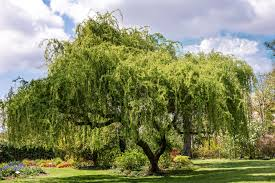

An oak is a hardwood tree or shrub in the genus Quercus of the beech family. They have spirally arranged leaves, often with lobed edges, and a nut called an acorn, borne within a cup. The genus is widely distributed in the Northern Hemisphere, with some 500 species, both deciduous and evergreen.

Willows, also called sallows and osiers, of the genus Salix, comprise around 350 species of typically deciduous trees and shrubs. They are primarily found on moist soils in cold and temperate regions.
Magnolia is a large genus of about 210 to 340 flowering plant species in the subfamily Magnolioideae of the family Magnoliaceae